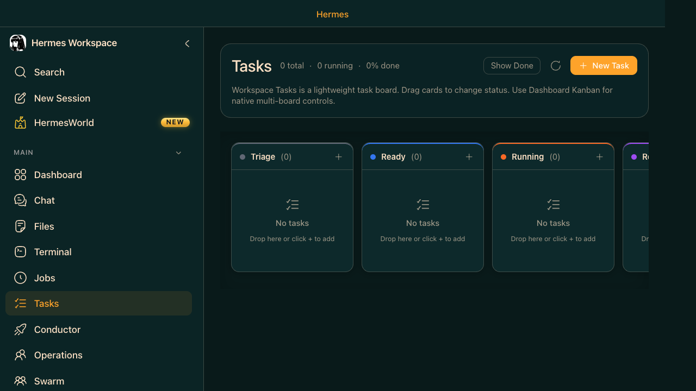

Tasks (Kanban) — The Workspace Task Board
Tasks is the Kanban board for Hermes Workspace — the main visual task board where you create cards, drag them across columns, and watch agents pick them up. The same underlying board is also accessible from Hermes Agent via the CLI and dashboard commands, but the Workspace UI is the primary front door. It is the bridge between "things to do" and "agent doing them." Columns: Triage → Ready → Running → Review → Done.
- Triage — new tasks waiting to be specified or decomposed
- Ready — tasks with enough detail for an agent to start
- Running — agent actively working on the task
- Review — agent finished; waiting for human review
- Done — completed and accepted
- Drag to move — change status by dragging cards between columns
- New Task — button (top right) or
hermes kanban createfrom CLI

You have 10 tickets from your backlog. Drop them all into Triage. Hermes decomposes and specifies each one, moves them to Ready, then dispatches agent workers to handle them — while you work on other things.
Start here: Tasks is the first mode to learn. It teaches the lifecycle: Triage → Ready → Running → Review → Done. Then: one small Conductor mission. Then: Operations. Finally: Swarm when you want autonomous background work.
Beginner combo: gateway running + 1–2 simple kanban cards + one Builder/Lite agent in Operations. Intermediate: 2–3 agents or a single Conductor mission with concrete constraints. Advanced: multi-agent operations + swarm + tighter model/profile configuration.
- Open Tasks in Hermes Workspace (
localhost:3000/tasks) - Click New Task — add a title and description for each ticket
- Tasks start in Triage — Hermes will auto-specify them (decompose into a concrete spec)
- Once specified, tasks move to Ready — ready for agent pickup
- Run
hermes kanban dispatchin terminal to assign Ready tasks to agents - Watch tasks move to Running as agents work them
- Completed tasks land in Review — inspect, approve, or request changes
Create a task from Workspace Chat, then find it on the board:
These five tasks are not executed in a fixed left-to-right sequence. Hermes evaluates all Ready tasks and dispatches them to available agent profiles as capacity allows; multiple tasks can run in parallel, and dependency-gated tasks wait until their prerequisites complete.
Refactor the file), Hermes should ask for the missing file, scope, or success criteria instead of guessing. In a Kanban workflow, that usually means the card sits in Triage or Blocked until the missing detail is added. You can tell it is waiting because it does not advance to Ready/Running and no worker picks it up.hermes kanban boards create. The Workspace UI currently shows the default board — use CLI for multi-board switching.kanban.auto_decompose: true in config, Hermes automatically fans Triage tasks into subtask graphs every dispatcher tick. No manual dispatch needed.